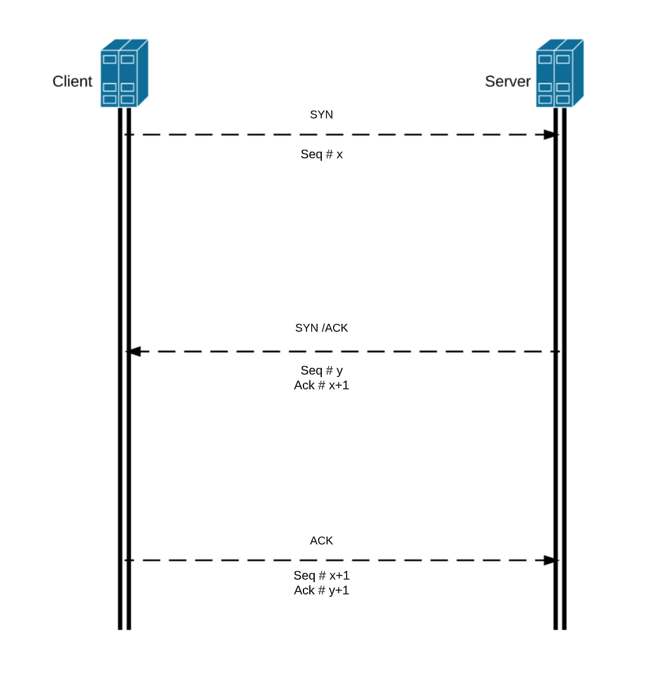

March, 27 2020
TCP 3 Way Handshake
This week I will talk about TCP 3 way handshake and a little bit about some of the TCP flags.
What is TCP?
TCP stands for Transmission Control Protocol. TCP is one of the main protocol in the TCP/IP suite. While IP protocol deals only with the packets, TCP enables two hosts to establish connection and exchange streams of data. This happens in the transport layer. With that being said, TCP is a protocol that manages data exchange in connection oriented environment.
What is three way handshake then?

Three way handshake is how TCP connection is established. There are 3 steps in establishing the connection. These three steps are:
- Step 1: Client initiates the connection by sending a packet with a SYN flag set. A random number generator will give a sequence number for this packet (let's say the sequence number is x). Then the client will wait for a response from the server which brings us to step2.
- Step 2: If the server received the packet sent in step 1, the server will then respond to the client's request by sending back a packet with the SYN and ACK flag set. The random number generator will also give a sequence number for this packet (let's say the sequence number is y). So now this packet would have sequence number of y and also an ACK number of x+1. If the server never received the packet sent from step 1, step 2 will not happen and the client will resend the packet again.
- Step 3: This is the final step on establishing the connection. This time, the client will send a packet to the server with ACK flag set. This packet will have a sequence number of x+1 and an ACK number of y+1. And now the connection is fully established and the data exchange may begin.
Some TCP flags:
As we've seen in the previous section. There are SYN and also ACK flags. These two flags are examples of TCP flags. There are more TCP flags that are used to indicate the particular state of the connections. Here are 4 common TCP flags that you might see:
- SYN: SYN stands for Syncronization. It's pretty much just like saying hello. It is used to syncronize the sequence number.
- ACK: ACK stands for acknowledge. This flag is used to acknowledge the packet that was received successfully.
- FIN: FIN stands for finish. This flag is used in terminating connections when data exchange is done.
- RST: RST stands for reset. This flag is also used in terminating connections like FIN flag, however this flag is used when the sender feels something wrong with the TCP connection or that the conversation should not exist.